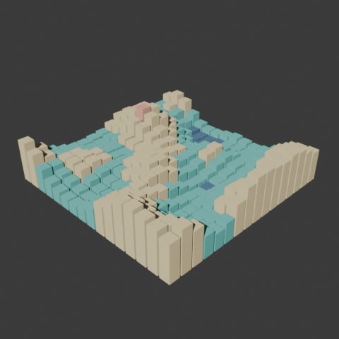

Blender 1
Scripting Blender
Blender is a complete 3D studio with a Python interpreter inside it. Anything you can do with the mouse, a script can do, and a script can do it ten thousand times with a different seed each time. This section brings the course's methods into Blender: scripts, procedural meshes, Geometry Nodes, and your own add-ons.
How this section differs. Blender code cannot run in a web page, so these four lessons have code listings and rendered pictures instead of live examples. Every script is a real file in the course's blender/scripts folder, and each was run in Blender 5.3 before the lesson was written. Blender's Python interface changes between versions. Where I know of a difference from 4.x it is noted, but the scripts were not run on 4.x.
Where Python lives in Blender
Open the Scripting workspace from the tabs along the top. It gathers what you need:
- Text Editor
- Write or open a script, then press Run Script. This is where you will work.
- Python Console
- Type one line at a time and see the result. Ideal for exploring: type
bpy.data.and press Tab to see what exists. - Info editor
- Shows, as Python, every action you perform with the mouse. Do something by hand, and copy the line it prints.
Two settings help a great deal. In Preferences, Interface, turn on Python Tooltips: hovering over any button then shows the Python name of the value behind it. And on Windows, Window, Toggle System Console opens the window where print output and error messages appear.
The four parts of the Python interface
| Module | What it is | Example |
|---|---|---|
bpy.data | Everything that exists in the file: objects, meshes, materials, collections, node trees | bpy.data.objects["Cube"] |
bpy.context | The current situation: the active object, the selection, the scene | bpy.context.active_object |
bpy.ops | Operators: the same commands the menus and buttons run | bpy.ops.mesh.primitive_cube_add() |
mathutils | Vectors, matrices, rotations, and noise functions | Vector((1, 0, 0)) |
There is a choice to make whenever you write a script. Operators (bpy.ops) are easy to find, because the Info editor prints them, but they depend on what is selected and which editor the mouse is over, and they are slow in loops. Working on the data directly (bpy.data) is faster and always behaves the same. For generating things, prefer data. Use operators for one-off actions such as exporting a file.
Objects, meshes and collections
Blender separates what a thing is from where it is, and this matters for procedural work.
- A mesh is geometry: vertices and faces.
- An object is a placement of some data in the scene: a position, rotation and scale, plus a reference to a mesh.
- Many objects can share one mesh. A thousand objects using the same mesh cost little more memory than one. This is Blender's version of sharing a geometry in three.js.
- An object appears in the scene only when it is linked into a collection, which is a folder of objects.
Blender uses Z up, like the 3D printing lessons. Its default unit is the metre. Rotations in Python are in radians.
A first procedural script
This is Lesson 1 of the main course, in Blender: a grid, and properties that follow from position. A noise field sets each column's height and picks its colour from a small palette. Read it top to bottom. The numbered comments are the steps you will repeat in nearly every generating script.

import math
import random
import bpy
from mathutils import Vector, noise
SEED = 7
SIZE = 16 # columns along each side
SPACING = 0.6 # metres between columns
# ---- 1. start from an empty scene ----
for obj in list(bpy.data.objects):
bpy.data.objects.remove(obj, do_unlink=True)
rng = random.Random(SEED)
offset = Vector((rng.uniform(-100, 100), rng.uniform(-100, 100), 0.0)) # a different patch of noise per seed
# ---- 2. one mesh, shared by every column ----
bpy.ops.mesh.primitive_cube_add(size=1.0)
template = bpy.context.active_object
cube_mesh = template.data
bpy.data.objects.remove(template, do_unlink=True) # keep the mesh, discard the object
# ---- 3. a few materials to choose from ----
palette = [(0.11, 0.21, 0.34), (0.16, 0.62, 0.56), (0.91, 0.77, 0.42), (0.91, 0.44, 0.32)]
materials = []
for i, colour in enumerate(palette):
mat = bpy.data.materials.new(f"Column {i}")
mat.use_nodes = True
mat.node_tree.nodes["Principled BSDF"].inputs["Base Color"].default_value = (*colour, 1.0)
mat.diffuse_color = (*colour, 1.0)
materials.append(mat)
cube_mesh.materials.append(materials[0]) # gives the mesh one material slot
# ---- 4. the loop: position, height and colour all follow from the grid position ----
collection = bpy.data.collections.new("Columns")
bpy.context.scene.collection.children.link(collection)
for j in range(SIZE):
for i in range(SIZE):
x = (i - SIZE / 2 + 0.5) * SPACING
y = (j - SIZE / 2 + 0.5) * SPACING
n = 0.5 + 0.5 * noise.noise(Vector((x * 0.35, y * 0.35, 0.0)) + offset) # 0..1
height = 0.2 + 4.0 * n * n
column = bpy.data.objects.new(f"Column {i}-{j}", cube_mesh) # a new object using the shared mesh
column.location = (x, y, height / 2) # a cube is centred, so lift it by half
column.scale = (SPACING * 0.85, SPACING * 0.85, height)
collection.objects.link(column)
# objects that share a mesh can still have their own material, set "on the object"
slot = column.material_slots[0]
slot.link = "OBJECT"
slot.material = materials[min(len(materials) - 1, int(n * len(materials)))]The file continues by adding a camera and a sun so that the scene can be rendered.
What to notice
- The seed. Python's
random.Random(SEED)is a seeded generator, as in Lesson 2. Blender's noise function has no seed of its own, so the script samples it at a seeded offset, which is the standard trick. - The shared mesh. One cube mesh, 256 objects. Scale and position belong to the object, so each can differ.
- The cleared scene. A generating script should give the same result however many times it is run. Deleting what the last run made is the simplest way.
- No selection. After step 2 the script never selects anything or calls an operator. It would work from the command line with no window at all.
Running scripts
| How | Command | When |
|---|---|---|
| In the Text Editor | Open the file, press Run Script (or Alt+P) | While developing |
| From a terminal, with the window | blender --python script.py | To open Blender on a generated scene |
| From a terminal, no window | blender --background --python script.py | Batch generation and rendering (Lesson 4) |
| One line | Type it in the Python Console | Exploring |
On Windows the program is blender.exe inside the installation folder, for example C:\Program Files\Blender Foundation\Blender 5.3. Put the whole path in quotes.
Habits that save time
- Save before running. A script can freeze Blender with an endless loop or a million objects.
- Start small. Test with a grid of 8 before 200.
- Read the error. The system console names the line. Most errors are a misspelt name or an operator run in the wrong context.
- Explore in the console.
dir(obj)lists what an object has. Tab completes names. - Undo works. Ctrl+Z after a script removes what it made.
Key ideas
bpy.datais everything that exists,bpy.contextis the current situation,bpy.opsis the menu commands.- For generating, work on data directly. It is faster and does not depend on selection.
- An object is a placement. A mesh is geometry. Many objects can share one mesh.
- Nothing is visible until it is linked into a collection.
- Seed Python's random generator, and offset noise by seeded amounts.
- Make scripts repeatable by clearing what the previous run created.
Blender challenge 1
The Rule Scene
Rebuild the idea of your Lesson 1 poster as a Blender scene: a field of objects in which every property is computed, generated by a script that runs from an empty file.
Requirements
- One script that clears the scene and builds everything, including a camera and at least one light.
- At least 200 objects sharing no more than three meshes.
- At least three properties per object (position, scale, rotation, material) follow from two different fields, such as distance from a point and noise.
- A
SEEDconstant at the top. The same seed always gives the same scene. - No operator calls inside the main loop.
- It runs with
blender --background --pythonand saves a rendered image.
Hints
- Start from
01_first_script.pyand change one thing at a time. - For rotation, set
obj.rotation_euler = (x, y, z)in radians. - To render: set
scene.render.filepath, then callbpy.ops.render.render(write_still=True).
You are done when
- Running the script twice gives an identical scene, and a different seed gives a clearly different one.
- Changing the grid size from 16 to 40 needs no other edit.